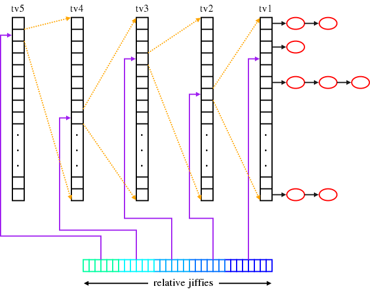

A new approach to kernel timers
Ingo Molnar's recently-released 2.6.13-rt6 tree, which contains the realtime preemption patch set, brought a surprise in the form of a new high-resolution timer implementation by Thomas Gleixner. Ingo has stated his intention to merge this new code ("ktimers") upstream, so it merits a look.
The ktimer implementation starts with the view that there are two fundamentally different types of timers used in the system. They are (using the terms adopted by the patch):
- Timeouts. Timeouts are used primarily by networking and device
drivers to detect when an event (I/O completion, for example) does not
occur as expected. They have low resolution requirements, and they
are almost always removed before they actually expire.
- Timers are used to sequence ongoing events. They can have high resolution requirements, and usually expire.
The current kernel timer implementation is heavily oriented toward timeouts. To see how, consider the following diagram which, with sufficient imagination, can be construed as a model of the data structure used inside the kernel to manage timers:

At the right side of the diagram is an array (tv1) containing a set of 256 (in most configurations) linked lists of upcoming timer events. This array is indexed directly by the bottom bits of a jiffies value to find the next set of events to execute. When the kernel has, over the course of 256 jiffies, cycled through the entire tv1 array, that array must be replenished with the next 256 jiffies worth of events. That is done by using the next set of jiffies bits (six, normally) to index into the next array (tv2), which points to those 256 jiffies of timer entries. Those entries are "cascaded" down to tv1 and distributed into the appropriate slots depending on their expiration times. When tv2 is exhausted, it is replenished from tv3 in the same way. This process continues up to tv5. The final entry in tv5 is special, in that it holds all of the far-future events which do not otherwise fit into this hierarchy.
This structure has some distinct advantages. It can retrieve all of the events to execute with a simple array lookup. Insertion of events is cheap, since their location in the structure is easy to calculate. Importantly, the removal of events is also cheap; there is no need to search through a long list of events to find a specific one to take out. Since most timeouts are removed before they expire, quick removal is a useful feature.
On the other hand, this data structure is firmly tied to jiffies values, and cannot easily cope with timers with sub-jiffies resolution. The cascade process, which moves events from the higher arrays to the lower ones, can be expensive if there are a lot of events to work with. Events which are removed prior to expiration will often not have to be cascaded at all, while those which survive through to expiration will have to work their way through the structure. If the clock interrupt frequency is raised (to get better timer resolution), these cascades will happen more often, and the cost of the data structure goes up.
The ktimers patch makes no changes to the existing API or data structure, which are deemed to be adequate and efficient for use with timeouts. Instead, it adds an entirely new API (and internal implementation) aimed at the needs of high-resolution timers. So ktimers are described entirely with human time units - nanoseconds, in particular. They are kept in a sorted, per-CPU list, implemented as a red-black tree. This structure provides for relatively quick insertion or removal, though it will be slower than the timeout structure shown above - but there is no need for the cascade operation.
The core structure for ktimers is, unsurprisingly, struct ktimer. They must be initialized before use with one of the following functions:
void init_ktimer_mono(struct ktimer *timer);
void init_ktimer_real(struct ktimer *timer);
Internally, each ktimer is tied to a "base," being the clock by which it is run. The ktimer patch provides two such clocks. The "monotonic" clock is similar to jiffies in that it is a straightforward, always-increasing count. The "realtime" clock, instead, tries to match time as known outside of the system; that clock can be corrected by the kernel or by the system administrator. A ktimer with a 5ms expiration will, if initialized with init_ktimer_mono(), expire 5ms in the future (with the usual proviso that delays can happen). That same timer, if initialized with init_ktimer_real(), will expire when the realtime clock says that 5ms have passed. But, since the realtime clock may be adjusted in the meantime, the actual elapsed time could differ.
There are some caller-accessible fields in struct ktimer:
void (*function)(void *);
void *data;
nsec_t expired;
nsec_t interval;
When the timer expires, function() will be called with data as its argument. The expired field will contain the time at which the timer actually expired, which might be later than requested. Interestingly, the high-resolution version of the ktimers patch does not set this field. Finally, interval is used for periodic timers.
A timer is set with a call to:
int start_ktimer(struct ktimer *timer, nsec_t *time, int mode);
Here, time is the expiration time in nanoseconds, and mode describes how that time is to be interpreted. The possible mode values are:
- KTIMER_ABS: the timer will expire at an absolute time.
- KTIMER_REL: the given time value is a relative time, which must be added to the current time to get an absolute expiration time.
- KTIMER_INCR: for timers which have been used before, the time value is added to the previous expiration time.
- KTIMER_FORWARD: like KTIMER_INCR, except that the time value will be added repeatedly, if necessary, to obtain an expiration time in the future.
- KTIMER_REARM: like KTIMER_FORWARD, except that the interval value stored in the timer is added.
- KTIMER_RESTART: the expiration time of the timer is not changed at all.
For KTIMER_FORWARD and KTIMER_REARM, the ktimer code also maintains an integer overrun field in the ktimer structure. If a timer is started after the next expected expiration time (in other words, the system fell behind and did not restart the timer soon enough), overrun will be incremented to allow the calling code to compensate.
The return value will be zero, unless the timer is already expired, in which case the timer will not be started and the return value will be negative. If, however, the mode argument contains the bit KTIMER_NOCHECK, the timer will be started and executed normally, regardless of whether it is already expired.
Most of the other ktimer functions are reasonably self-explanatory for those who have seen the current timer API:
int modify_ktimer(struct ktimer *timer, nsec_t *time, int mode);
int try_to_stop_ktimer(struct ktimer *timer);
int stop_ktimer(struct ktimer *timer);
There is also a convenience function to make a process sleep on a ktimer:
nsec_t schedule_ktimer(struct ktimer *timer, nsec_t *time,
int state, int mode);
The additional argument here (state) should be TASK_INTERRUPTIBLE or TASK_UNINTERRUPTIBLE, depending on whether the sleep should be interrupted by signals or not. The return value is the number of nanoseconds remaining in the requested sleep time; it will be zero except when the sleep is ended prematurely.
The standalone ktimers patch posted by Thomas is the version most likely to be merged. This patch runs ktimers from the normal clock interrupt, with the result that it provides no better resolution than the existing timer API. All of the structure is there to do better, however, once the low-level timer code and architecture specific support is in place. A separate patch exists which enables ktimers to provide high-resolution timers on the i386 architecture.
So far, the largest objection to the ktimer implementation is the use of nanoseconds for time values. Nanosecond timekeeping requires 64-bit variables, which will slow things down a little on 32-bit systems. The response from the developers is that the additional overhead is almost zero and not worth worrying about. So, unless some other surprise turns up, ktimers could find their way into the kernel not too long after 2.6.14 comes out.
(See also: this posting from
Thomas, which describes the motivation behind ktimers and its relation
to other timing patches in detail).
| Index entries for this article | |
|---|---|
| Kernel | Realtime |
| Kernel | Timers |
Posted Sep 22, 2005 14:21 UTC (Thu)
by NAR (subscriber, #1313)
[Link] (4 responses)
Posted Sep 22, 2005 14:30 UTC (Thu)
by corbet (editor, #1)
[Link] (3 responses)
Posted Sep 22, 2005 18:11 UTC (Thu)
by tglx (subscriber, #31301)
[Link] (2 responses)
Posted Sep 29, 2005 6:31 UTC (Thu)
by goaty (guest, #17783)
[Link] (1 responses)
Posted Oct 1, 2005 17:43 UTC (Sat)
by renox (guest, #23785)
[Link]
If I understand well, the changes described in the article only affect the kernel. I guess the applications don't use the kernel interface directly for timers, they use calls like nanosleep(2), so they can only use this interface if glibc is updated. I wonder how long does this whole process take, from implementing a kernel patch, to integrate it, patch glibc, upgrade the libc packages of the distributions. Maybe a followup article next year would be interesting.
When will nanosleep(2) be rewrtten?
Actually, nanosleep() is a system call. The ktimer patch includes a nanosleep reimplementation, so everything should be in place. You'll need the extra, high-resolution bits (arch-specific timer code) to actually get nanosecond-resolution sleeps, of course.
When will nanosleep(2) be rewrtten?
Same applies to itimers and all posix timer interfaces. Once the additional bits for high resolution timers are in place it will work out of the box with no changes to glibc and application code required.When will nanosleep(2) be rewrtten?
Ironically I think there will be a handful of applications which assume the old, broken behaviour of nanosleep and will misbehave with the new nanosleep. Last time I checked nanosleep rounded the requested delay up to the next tick and then added another tick for good measure. Actually sleeping the requested amount will undoubtedly expose some application bugs.When will nanosleep(2) be rewrtten?
Well given that the tick has changed from 10ms to 1ms to 4ms, I think that the buggy applications must already have been fixed..When will nanosleep(2) be rewrtten?